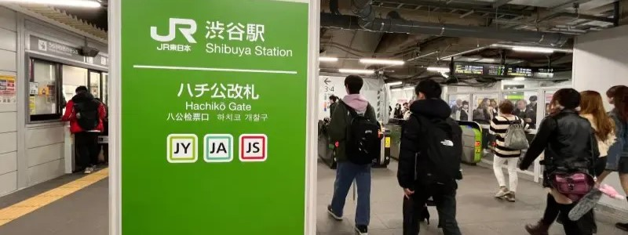
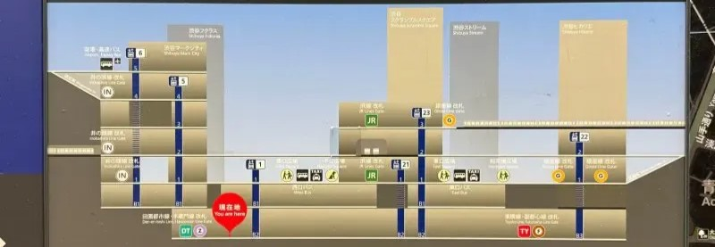
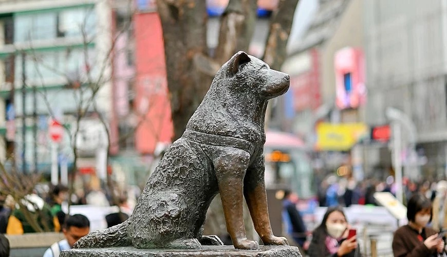
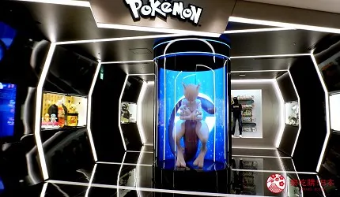

關於澀谷車站
➢ 不停進步演化的「澀谷車站」
澀谷除了十字路口，可能還會讓人有種「一直在施工」的印象，這正是因為自2012年開始，100年一度的「澀谷再開發」都市計畫，使得澀谷地區接連有著MIYASHITA PARK 宮下公園、Shibuya Sakura Stage（渋谷サクラステージ）等大型商場開幕，接著預計還有更多大型建案會陸續開幕，因而常常連本地人也會搞不清楚！
最近就連澀谷最知名、有著忠犬八公（忠犬ハチ公）銅像的車站出口——「八公口」（ハチ公口）也悄悄改變了出、入口地點，原本離八公廣場較近，現在則是改成離相反方向的「宮益坂」（從澀谷站延伸至青山通的坡道）較近。

➢ 澀谷車站可轉乘路線＆所需時間

想要秒懂澀谷的轉乘路線可以參考上圖，JR山手線的電車月台位在2樓，以此為基準往上到3樓「中央口」可轉乘東京Metro地鐵銀座線、京王電鐵井之頭線（井の頭線），而往下到1樓「八公檢票口」接著在檢票口外往下可轉乘東京Metro地鐵半藏門線、田園都市線；與八公檢票口相反方向往下到1樓「南檢票口」，接著在檢票口外可轉乘副都心線、東急東橫線。
| 最靠近JR山手線車站出口 | 轉乘路線 | 徒步時間 |
|---|---|---|
| 中央檢票口 | 東京Metro地鐵銀座線 | 約2分鐘 |
| 中央檢票口 | 京王電鐵井之頭線 | 約6分鐘 |
| 南檢票口 | 東京Metro地鐵副都心線 | 約5分鐘 |
| 南檢票口 | 東急東橫線 | 約5分鐘 |
| 八公檢票口 | 東京Metro地鐵半藏門線 | 約5分鐘 |
| 八公檢票口 | 東京Metro地鐵田園都市線 | 約5分鐘 |
附近景點
1. 澀谷十字路口
初次造訪「澀谷站」出站後一定會被洶湧人潮的「澀谷十字路口」給震驚！綠燈之後，四面八方的人潮往各自方向湧散，既混亂又井然有序的衝突美感，成為澀谷必拍的招牌景色。
好萊塢電影《玩命關頭 X 3 東京甩尾》、《惡靈古堡4》、NETFLIX 影集《今際之國》等國際作品也都借此當作故事舞台，成為全球最繁忙的城市象徵之一。
2. 澀谷八公銅像
澀谷另一知名地標，就是八公銅像！來自秋田大館的小八，每天都來澀谷車站前，等待從東大農學部下班的上野博士。有一天，上野博士突然在學校辭世，不知情的小八依舊到車站等待，不停地在人群中尋找教授的身影，直至離世為止。為緬懷小八對主人忠心耿耿的情懷，以及令人永世動容的忠誠，就在澀谷車站出口處設立八公紀念銅像。

附近商場
3. 澀谷PARCO
從50年前就擔任澀谷潮流指標的「澀谷PARCO」百貨，在歷經3年整修後，在2019年11月22日重新開幕！不只有首家任天堂與寶可夢旗艦店進駐，還有全日本首家電競咖啡廳，以及AI機器人、虛擬實境空間展等，將時尚、藝術、娛樂、美食、與科技5大元素完美融合
➢ Nintendo TOKYO
一走進店面就可以看到大隻瑪利歐跟你打招呼！裡面除了販賣任天堂遊戲機之外，整面牆的任天堂布偶、手提包、小方巾、文具等，相關周邊應有盡有。還另外增設了「Switch遊戲機區」，逛累了可以在裡面打場電動耍廢一下
➢ Pokémon Center SHIBUYA
任天堂旗艦店的正對面，就是「Pokémon Center SHIBUYA」啦！店面設計充滿未來科技氛圍，呈現寶可夢的世界觀。門口超大尊等身的超夢，居住的藍色膠囊採用實體動畫技術，呈現出栩栩如生的特效感。

周邊住宿